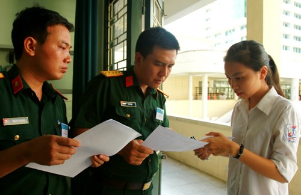

Chỉ tiêu tuyển sinh vào 21 trường quân đội năm 2016

Lần cập nhật cuối lúc Thứ tư, 16 Tháng 3 2016 16:18 Viết bởi Administrator Thứ tư, 16 Tháng 3 2016 16:09
Ban tuyển sinh quân sự Bộ Quốc phòng vừa công bố chỉ tiêu tuyển sinh ĐH, CĐ vào 21 trường quân đội năm 2016.

Theo đó, 21 trường ĐH, CĐ trong quân đội sẽ tổ chức tuyển sinh với phương thức xét tuyển trên cơ sở kết quả của Kỳ thi THPT quốc gia. Thí sinh đăng ký và dự Kỳ thi THPT quốc gia năm 2016 theo quy định của Bộ Giáo dục và Đào tạo (GD-ĐT).
Riêng các thí sinh dự thi hệ quân sự phải thực hiện sơ tuyển tại Ban tuyển sinh quân sự các địa phương, có đủ tiêu chuẩn theo quy định của Bộ Quốc phòng.
Điểm trúng tuyển được xét theo chỉ tiêu cho các đối tượng nam, nữ theo tổ hợp xét tuyển và khu vực phía Nam, phía Bắc.
Khi có hướng dẫn về tuyển thẳng và ưu tiên xét tuyển của Ban tuyển sinh quân sự Bộ Quốc phòng (TSQSBQP), các trường sẽ công bố các tiêu chí tuyển thẳng và ưu tiên xét tuyển.
Đối với nhiều trường, khi xét tuyển đến một mức điểm nhất định vẫn còn chỉ tiêu, nhưng số thí sinh cùng bằng điểm cao hơn số lượng chỉ tiêu còn lại, thực hiện xét tuyển theo các tiêu chí phụ.
Học viện Kỹ thuật quân sự sẽ dựa trên 3 tiêu chí: Thí sinh có điểm thi môn Toán cao hơn sẽ trúng tuyển. Sau khi xét tiêu chí 1, trường vẫn còn chỉ tiêu, nhưng có nhiều thí sinh cùng bằng điểm, cùng có tiêu chí 1 như nhau, thì xét đến tiêu chí 2, như sau: Thí sinh có tổng cộng điểm tổng kết môn học của 3 môn xét tuyển trong 5 học kỳ (học kỳ 1, học kỳ 2 của năm học lớp 10, lớp 11 và học kỳ 1 năm lớp 12) cao hơn sẽ trúng tuyển. Sau khi xét tiêu chí 2, trường vẫn còn chỉ tiêu, nhưng có nhiều thí sinh cùng bằng điểm, cùng có tiêu chí 1 và tiêu chí 2 như nhau thì xét đến tiêu chí 3, như sau: Thí sinh có tổng cộng điểm tổng kết môn học của 3 môn xét tuyển kỳ 1 năm lớp 12 cao hơn sẽ trúng tuyển. Khi xét đến tiêu chí 3 vẫn chưa đủ chỉ tiêu, Chủ tịch Hội đồng tuyển sinh trường quyết định tuyển nguyện vọng bổ sung hoặc báo cáo Ban TSQSBQP xem xét, quyết định.
Học viện Quân y sẽ dựa vào 2 tiêu chí: Thí sinh xét tuyển theo tổ hợp môn Toán, Lý, Hóa có điểm thi môn Toán cao hơn sẽ trúng tuyển; Thí sinh xét tuyển theo tổ hợp môn Toán, Hóa, Sinh có điểm thi môn Sinh cao hơn sẽ trúng tuyển. Sau khi xét tiêu chí 1, trường vẫn còn chỉ tiêu, nhưng có nhiều thí sinh cùng bằng điểm, cùng có tiêu chí 1 như nhau, thì xét đến các tiêu chí phụ tiếp theo như phần quy định xét tuyển tiêu chí phụ của Học viện Kỹ thuật quân sự.
Học viện Khoa học quân sự xét tiêu chí gồm: Thí sinh xét tuyển vào ngành Trinh sát kỹ thuật có điểm thi môn Toán cao hơn sẽ trúng tuyển; thí sinh xét tuyển vào các ngành Ngoại ngữ có điểm thi môn thi chính cao hơn sẽ trúng tuyển… Đối với thí sinh hệ dân sự, không quy định vùng tuyển sinh; điểm trúng tuyển theo ngành. Tỷ lệ xét tuyển của các tổ hợp theo quy chế của Bộ GD-ĐT. Tuyển thẳng và ưu tiên xét tuyển từ học sinh giỏi thực hiện theo quy định của Bộ GD-ĐT; chỉ tiêu tuyển thẳng và ưu tiên xét tuyển từ học sinh giỏi trừ vào chỉ tiêu tuyển sinh. Học phí theo quy định chung của Nhà nước.
Thông tin chi tiết chỉ tiêu tuyển sinh quân sự 2016 xem tại đây:
Theo Yến Anh (Người lao động)
- 05/10/2016 10:44 - Thi trắc nghiệm môn Toán xác suất đỗ ăn may ngang …
- 28/09/2016 00:00 - Phương án tổ chức kỳ thi trung học phổ thông Quốc …
- 01/08/2016 12:45 - Hướng dẫn thí sinh đăng ký xét tuyển trực tuyến Đạ…
- 29/07/2016 15:27 - Bộ giáo dục và đào tạo công báo điểm sàn Đại học n…
- 14/04/2016 07:45 - Cẩn trọng khi đăng ký dự thi để tránh rớt oan chế …
- itnbk.edu.vn
- 08/10/2015 00:00 - Gameshow truyền hình: Học trò xứ Quảng của QRT thắ…
- 22/07/2015 15:14 - Tra cứu điểm thi THPT Quốc gia năm 2015
- 02/04/2015 10:22 - Bộ Giáo dục công bố đề thi minh họa kỳ thi THPT qu…
- 27/02/2015 00:00 - 10 điểm nổi bật của quy chế kỳ thi THPT quốc gia
- 03/02/2015 07:03 - Băn khoăn với đổi mới giáo dục